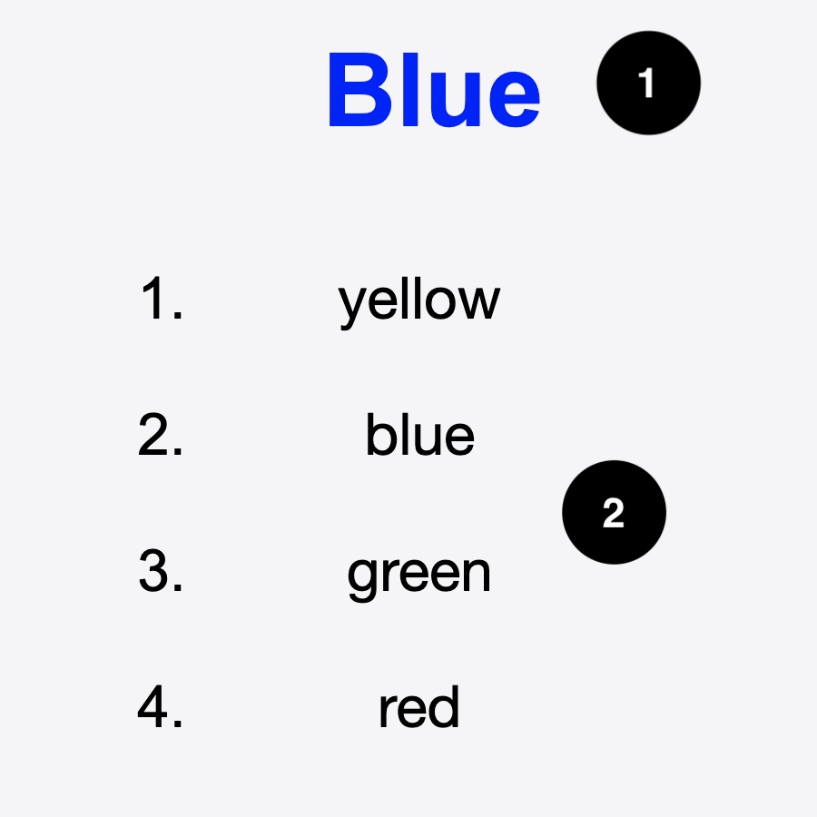

This test is designed to measure your inhibitory attention control, or simply inhibition. It refers to someone’s ability to ignore stimuli that are not relevant to the task at hand.
We will provide you with pages that look like this. At the top you see a word e.g. Yellow (marked 1) written in colors (green in this case) and below it four options (marked 2).
In this test you are required to identify the color in which the word is written, not what the word says.
For example, in the image above, you should mark "green" from the list below as the word is written in green (although it says yellow).
As another example, for the following page, you should mark "blue" from the list below as the word is written in blue.

You will be given a total of 48 such pages. Go through them as fast as you can.
You will be scored based on how quickly you can finish the 48 pages. Please do not pause during the test as it will mess with the score.
You will be provided with the next page only if you have marked the current page currently.
When ready, click on the Start button to start the test!